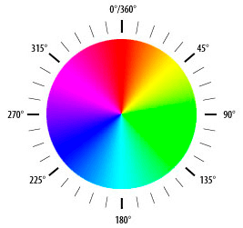
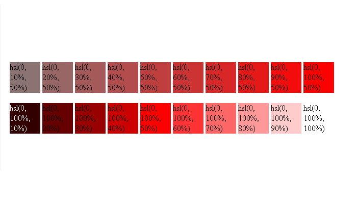

Введениие в графический вывод
информации.
Canvas
© IGP, январь 2025 г.
HTML элемент <canvas> или растровый холст используется для рисования графических объектов на лету при помощи скриптов.
Элемент <canvas> - это всего лишь контейнер для графики. Чтобы нарисовать какой-нибудь графический объект в действительности необходимо использовать специальный скрипт. Для этого у canvas есть несколько методов, которые позволяют нарисовать контуры, прямоугольники, окружности, вывести текст и добавить изображения.
В элементе <canvas> можно вывести текст, анимированный или нет.
Элемент <canvas> обладает богатыми возможностями для графического представления данных при помощи диаграмм, графиков и схем.
Объекты элемента <canvas> могут двигаться. Возможно все: от прыгающих мячей до сложной анимации.
Элемент <canvas> может быть интерактивным и реагировать на события JavaScript. Элемент <canvas> может отвечать на любое действие пользователя: нажатие на клавишу, на кнопку мыши, на элемент кнопки на веб-страницы, на движение пальца и т.д.
Элемент <canvas> может использоваться для создания игр. Методы элемента <canvas> для анимирования графических объектов предоставляют богатые возможности для создания игровых HTML приложений.
<canvas id="myCanvas" width="200" height="100"></canvas>
У элемента <canvas> должен быть определен атрибут id, чтобы можно было получить к нему доступ в скрипте JavaScript.
Атрибуты width и height необходимы для определения размеров (ширины и высоты) элемента.
На HTML странице можно определять любое количество элементов <canvas>.
Чтобы добавить рамку используется атрибут style:
<canvas id="myCanvas" width="200" height="100"
style="border:1px solid #000000; background:white;"></canvas>
Заполненый прямоугольник
<canvas id="myCanvas1" width="200" height="100"
style="border:1px solid #000000; background:white;"></canvas>
<script>
var canvas = document.getElementById("myCanvas1");
var ctx = canvas.getContext("2d");
ctx.fillStyle = "#FF0000";
ctx.fillRect(10,10,150,75);
</script>
Координаты в canvas
Пространство canvas или растрового холста представляет собой двухмерную сетку.
Верхний левый угол холста имеет координаты (0,0).
HTML Цвета
В настоящее время цвета могут быть указаны с помощью следующих методов:
- Шестнадцатеричные значения цвета.
- RGB и RGBA значения цвета.
- HSL и HSLA значения цвета.
- Названия цветов (ключевые слова).
Шестнадцатеричные значения цвета
Шестнадцатеричные значения цвета поддерживается всеми основными браузерами. Шестнадцатеричные значение цвета имеет следующий синтаксис:
#RRGGBB
- RR (красный)
- GG (зеленый)
- BB (синий)
Все значения должны быть между 00 и FF.
Например, значение #0000FF отображается как синий,
потому что компонент BB установлен в его самое
высокое значение (FF),
а другие установлены в самое низкое значение
(00).
Допускается сокращать шестнадцатеричные числа до трех символов, если каждое из трех двухзначных чисел содержит одинаковые символы. Например, #0000FF можно записывать как #00F.
RGB цвета
RGBA является более современным методом задания цвета, где:
- R означает Red (красный)
- G означает Green (зеленый)
- B означает Blue (синий)
- A означает Alpha (степень смешивания с фоном)
Этот метод отличается от RGB тем, что он добавляет альфа-канал, который позволяет задать уровень прозрачности со значениями от 0 до 1, где:
- 0 - цвет невидимый.
- 1 - цвет непрозрачный.
<p style = "color: rgba(255, 0, 0, 0.1)">абзац красного цвета?</p>
<p style = "color: rgba(255, 0, 0, 0.2)">абзац красного цвета?</p>
<p style = "color: rgba(255, 0, 0, 0.3)">абзац красного цвета?</p>
<p style = "color: rgba(255, 0, 0, 0.4)">абзац красного цвета?</p>
<p style = "color: rgba(255, 0, 0, 0.5)">абзац красного цвета?</p>
абзац красного цвета?
абзац красного цвета?
абзац красного цвета?
абзац красного цвета?
абзац красного цвета?
HSL цвета
К еще одному методу задания цвета относится HSL. HSL это аббревиатура, которая объединяет в себе первые буквы трех признаков:
- Hue — тон (в градусах).
- Saturation — насыщенность (в %).
- Lightness — осветленность (в %).
При этом используется следующий синтаксис:
hsl(от 0° до 360°, от 0 до 100%, от 0% до 100%)
Градусы соответствуют цвету на круге оттенков:
Для насыщенности: 0% - полное отсутствие, 100% - чистый и яркий цвет.
Для осветленности: 0% (черный) до 100% (белый), значение 50% даёт чистый цвет.
Пример
HSLA цвета
HSL поддерживает прозрачность с помощью добавления альфа-канала, который задает уровень прозрачности со значениями от 0 до 1.
<p style = "color: hsla(0,100%,50%,0.1)">Я абзац красного цвета?</p>
<p style = "color: hsla(0,100%,50%,0.2)">Я абзац красного цвета?</p>
<p style = "color: hsla(0,100%,50%,0.3)">Я абзац красного цвета?</p>
<p style = "color: hsla(0,100%,50%,0.4)">Я абзац красного цвета?</p>
Я абзац красного цвета?
Я абзац красного цвета?
Я абзац красного цвета?
Я абзац красного цвета?
Имена цветов

<p style="color:red;background:silver;">красный на сером<p>
красный на сером
Линия
- moveTo(x,y) — определяет начальную точку
- lineTo(x,y) — определяет конечную точку
Чтобы действительно нарисовать линию, нужно воспользоваться "рисовальным" методом stroke().
<canvas id="myCanvas2" width="200" height="100"
style="border:1px solid #000000; background:white;"></canvas>
<script>
var canvas = document.getElementById("myCanvas2");
var ctx = canvas.getContext("2d");
ctx.moveTo(0,0);
ctx.lineTo(200,100);
ctx.stroke();
<script>
Круг
- beginPath() — начинает контур
- arc(x,y,r,startangle,endangle) — создает дугу/кривую.
var canvas = document.getElementById("myCanvas");
var ctx = canvas.getContext("2d");
ctx.beginPath();
ctx.arc(95,50,40,0,2*Math.PI);
ctx.stroke();
Нарисуйте "светофор": три круга - красного, желтого и зеленого цвета. Одинакового радиуса, один под другим
Градиенты
- createLinearGradient(x,y,x1,y1) — создает линейный градиент
- createRadialGradient(x,y,r,x1,y1,r1) — создает радиальный градиент
Линейный градиент
var c=document.getElementById("myCanvas");
var ctx=c.getContext("2d");
// Создаем градиент
var grd=ctx.createLinearGradient(0,0,200,0);
grd.addColorStop(0,"red");
grd.addColorStop(1,"white");
// Заполняем градиентом фигуру
ctx.fillStyle=grd;
ctx.fillRect(10,10,150,80);
Радиальный градиент
var c=document.getElementById("myCanvas");
var ctx=c.getContext("2d");
// Создаем градиент
var grd=ctx.createLinearGradient(0,0,200,0);
grd.addColorStop(0,"red");
grd.addColorStop(1,"white");
// Заполняем градиентом фигуру
ctx.fillStyle=grd;
ctx.fillRect(10,10,150,80);
Нарисуйте на холсте разные геометрические фигуры, заполненые линейным градиентом.
Нарисуйте на холсте разные геометрические фигуры, заполненые радиальным градиентом.
Вывод текста
- font — определяет шрифт текста
- fillStyle — цвет заливки
- textAlign — центрирование текста
- fillText(text,x,y) — рисует "залитый" текст
- strokeText(text,x,y) — рисует текст без заливки
- measureText(text) — объект, содержащий ширину заданного текста
var canvas = document.getElementById("myCanvas");
var ctx = canvas.getContext("2d");
ctx.font = "30px Comic Sans MS";
ctx.fillStyle = "red";
ctx.textAlign = "center";
ctx.fillText("Hello World", canvas.width/2, canvas.height/2);
Нарисуйте на холсте две координатные оси (с началом координат в центре холста), установите шаг координатной сетики равным 20 и выведите подписи.
Cвойства и методы
- lineCap — Устанавливает/возвращает стиль концов нарисованной линии
- lineJoin — Устанавливает/возвращает тип угла, созданного пересечением двух линий
- lineWidth — Устанавливает/возвращает ширину текущей линии
- miterLimit — Устанавливает/возвращает максимальную длину среза
Контуры
- arc() — Создает дугу/кривую (используется для создания окружностей или их части)
- arcTo() — Создает дугу/кривую между двумя касательными
- beginPath() — Начинает контур или сбрасывает текущий контур
- bezierCurveTo() — Создает кубическую кривую Безье
- clip() — Обрезает область любой формы и размера, находящуюся вне указанного контура
arc()
x Координата X центра круга
y Координата Y центра круга
r Радиус круга
sAngle Начальный угол в радианах (0 — позиция на 3 часа)
eAngle Конечный угол в радианах
counterclockwise Необязательный параметр. Определяет, как рисовать окружность, по часовой стрелке или против часовой стрелки.
var c=document.getElementById("myCanvas");
var ctx=c.getContext("2d");
ctx.beginPath();
ctx.arc(100,75,50,0,2*Math.PI);
ctx.stroke();
arcTo()
Метод arcTo() создает дугу/кривую между двумя касательными в элементе
Чтобы действительно нарисовать дугу в элементе <canvas>, используется метод stroke().
x1 Координата X первой касательной
y1 Координата Y первой касательной
x2 Координата X второй касательной
y2 Координата Y второй касательной
r Радиус дуги
Пример
var c=document.getElementById("myCanvas");
var ctx=c.getContext("2d");
ctx.beginPath();
// Создаем начальную точку
ctx.moveTo(20,20);
// Создаем горизонтальную линию
ctx.lineTo(100,20);
// Создаем дугу
ctx.arcTo(150,20,150,70,50);
// Продолжаем линию по вертикали
ctx.lineTo(150,120);
// Рисуем все
ctx.stroke();
beginPath()
Метод beginPath() начинает контур или сбрасывает текущий контур.
Для создания контуров используйте методы moveTo(), lineTo(), quadraticCurveTo(), bezierCurveTo(), arcTo(), и arc(). Чтобы действительно нарисовать контур в элементе <canvas>, используется метод stroke().
Пример
var c=document.getElementById("myCanvas");
var ctx=c.getContext("2d");
// Зеленый контур
ctx.beginPath();
ctx.lineWidth="5";
ctx.strokeStyle="green";
ctx.moveTo(0,75);
ctx.lineTo(250,75);
ctx.stroke(); // Нарисуем его
// Пурпурный контур
ctx.beginPath();
ctx.strokeStyle="purple";
ctx.moveTo(50,0);
ctx.lineTo(150,130);
ctx.stroke(); // Нарисуем его
stroke()
var c=document.getElementById("myCanvas");
var ctx=c.getContext("2d");
ctx.beginPath();
ctx.moveTo(20,20);
ctx.lineTo(20,100);
ctx.lineTo(70,100);
ctx.strokeStyle="red";
ctx.stroke();
Контуры
- closePath() — Замыкает контур соединяя последнюю точку с первой
- fill() — Делает заливку текущей фигуры (контура)
- isPointInPath() — Возвращает значение true, если заданная точка находится внутри текущего контура, в обратном случае возвращается значение false
- lineTo() — Добавляет новую точку контура и создает линию к этой точке от последней заданной точки
Контуры
- moveTo() — Передвигает точку контура в заданные координаты не рисуя линию
- quadraticCurveTo() — Создает квадратичную кривую Безье
- stroke() — В действительности рисует определенный вами контур
Домашнее задание
Изучить понятие и математические основы кривых Безье
Прямоугольники
- clearRect() — Очищает заданную область пикселей внутри данного прямоугольника
- fillRect() — Рисует "залитый" прямоугольник
- rect() — Создает прямоугольник
- strokeRect() — Рисует прямоугольник (без заливки)
clearRect()
Метод clearRect() очищает заданную область пикселей внутри данного прямоугольника.
x Координата X верхнего левого угла очищаемой области
y Координата Y верхнего левого угла очищаемой области
width Ширина очищаемой области в пикселях
height Высота очищаемой области в пикселях
Пример
var c=document.getElementById("myCanvas");
var ctx=c.getContext("2d");
ctx.fillStyle="red";
ctx.fillRect(0,0,300,150);
ctx.clearRect(20,20,100,50);
fillRect()
Метод fillRect() рисует "залитый" прямоугольник. Цвет заливки, по умолчанию, черный.
Чтобы установить другой цвет/градиент заливки, используется свойство fillStyle.
Параметры
x Координата X верхнего левого угла прямоугольника
y Координата Y верхнего левого угла прямоугольника
width Ширина прямоугольника в пикселях
height Высота прямоугольника в пикселях
var c=document.getElementById("myCanvas");
var ctx=c.getContext("2d");
ctx.fillRect(20,20,150,100);
rect()
Метод rect() создает прямоугольник.
Чтобы действительно нарисовать прямоугольник, используйте метод stroke() или fill().
Параметры
x Координата X верхнего левого угла прямоугольника var ctx=c.getContext("2d");
ctx.strokeRect(20,20,150,100);
height Высота прямоугольника в пикселях
var c=document.getElementById("myCanvas");
var ctx=c.getContext("2d");
ctx.rect(20,20,150,100);
ctx.stroke();
Пример
var c=document.getElementById("myCanvas");
var ctx=c.getContext("2d");
// Красный прямоугольник
ctx.beginPath();
ctx.lineWidth="6";
ctx.strokeStyle="red";
ctx.rect(5,5,290,140);
ctx.stroke();
// Зеленый прямоугольник
ctx.beginPath();
ctx.lineWidth="4";
ctx.strokeStyle="green";
ctx.rect(30,30,50,50);
ctx.stroke();
// Синий прямоугольник
ctx.beginPath();
ctx.lineWidth="10";
ctx.strokeStyle="blue";
ctx.rect(50,50,150,80);
ctx.stroke();
strokeRect()
Метод strokeRect() рисует прямоугольник (без заливки). По умолчанию прямоугольник рисуется черным цветом.
Чтобы задать цвет, градиент или паттерн, которым будет нарисован прямоугольник используется свойство strokeStyle.
Параметры
x Координата X верхнего левого угла прямоугольника
y Координата Y верхнего левого угла прямоугольника
width Ширина прямоугольника в пикселях
height Высота прямоугольника в пикселях
Пример
var c=document.getElementById("myCanvas");
var ctx=c.getContext("2d");
ctx.strokeRect(20,20,150,100);
Трансформации
- rotate() — Поворачивает текущий графический объект
- scale() — Изменяет масштаб текущего графического объекта
rotate()
Метод позволяет поворачивать текущий графический объект.
Чтобы графический объект был повернут, метод rotate() необходимо применить до того, как объект будет нарисован.
Параметр
угол Угол поворота в радианах.
Чтобы пересчитать градусы в радианы: градусы*Math.PI/180.
Пример
var c=document.getElementById("myCanvas");
var ctx=c.getContext("2d");
ctx.rotate(20*Math.PI/180);
ctx.fillRect(50,20,100,50);
scale()
Метод scale() изменяет масштаб текущего графического объекта, делает его больше или меньше.
Если изменяется масштаб графического объекта, то будущие графические объекты также изменят масштаб. Позиционирование также будет масштабироваться.
Параметры
scalewidth Масштабирует ширину текущего графического объекта (1=100%, 0.5=50%)
scaleheight Масштабирует высоту текущего графического объекта (1=100%, 0.5=50%)
Примеры
var c=document.getElementById("myCanvas");
var ctx=c.getContext("2d");
ctx.strokeRect(5,5,25,15);
ctx.scale(2,2);
ctx.strokeRect(5,5,25,15);
var c=document.getElementById("myCanvas");
var ctx=c.getContext("2d");
ctx.strokeRect(5,5,25,15);
ctx.scale(2,2);
ctx.strokeRect(5,5,25,15);
ctx.scale(2,2);
ctx.strokeRect(5,5,25,15);
ctx.scale(2,2);
ctx.strokeRect(5,5,25,15);
Трансформации
- transform() — Применяет заданную матрицу трансформации
- translate() — Ретранслирует позицию (0,0) в новое место
transform()
У каждого объекта на растровом холсте есть текущая матрица трансформации.
Метод transform() комбинирует путем умножения текущую матрицу трансформации с матрицей, описываемой как:
a c e
b d f
0 0 1
Метод transform() позволяет масштабировать, поворачивать, двигать и скручивать текущий контекст.
Параметры матрицы
a Горизонтальный масштаб
b Горизонтальное скручивание
c Вертикальное скручивание
d Вертикальный масштаб
e Горизонтальный сдвиг
f Вертикальный сдвиг
Пример
var c=document.getElementById("myCanvas");
var ctx=c.getContext("2d");
ctx.fillStyle="yellow";
ctx.fillRect(0,0,250,100)
ctx.transform(1,0.5,-0.5,1,30,10);
ctx.fillStyle="red";
ctx.fillRect(0,0,250,100);
ctx.transform(1,0.5,-0.5,1,30,10);
ctx.fillStyle="blue";
ctx.fillRect(0,0,250,100);
translate()
Метод translate() ретранслирует позицию (0,0) в новое место растрового холста.
Если после метода translate() вызывается, например, такой метод как fillRect(), то его значение добавляется к значениям x- и y-координат.

Значения параметров
x Значение, добавляемое к горизонтальным (x) координатам
y Значение, добавляемое к вертикальным (y) координатам
Пример
var c=document.getElementById("myCanvas");
var ctx=c.getContext("2d");
ctx.fillRect(10,10,100,50);
ctx.translate(70,70);
ctx.fillRect(10,10,100,50);
Задание
Нарисовать кубик со стороной 20 в аксонометрической (изометрической) проекции.
Изометрия
Является вариантом аксонометрической проекции, при котором все три оси координат имеют одинаковый наклон (120°). В данном случае изменение размеров проецируемого предмета одинаковое по всем трем осям. Для построения чертежей чаще всего применяется прямоугольная изометрия (проектирующие лучи перпендикулярны плоскости).
Диметрия
В этом случае две оси в системе координат имеют одинаковый наклон, а третья — другой (например, 135°, 135° и 90°). Соответственно, уменьшение размеров предмета будет одинаковым только по двум осям, а сам он будет выглядеть повернутым фронтальной стороной к наблюдателю.
Триметрия
В данном случае коэффициенты искажения изображения проецируемого предмета отличаются друг от друга сразу по трем осям (150°, 70°, 140°). Следовательно, аксонометрический вид предмета будет специфичным: наблюдатель по-прежнему увидит его с тех сторон, но некоторые детали могут быть менее детализированны за счет изменения угла обзора.
Задание повышенной сложности
Нарисовать кубик состороной 1. Вращать кубик на экране средствами JavaScript. Объяснить математическую модель и алгоритм.